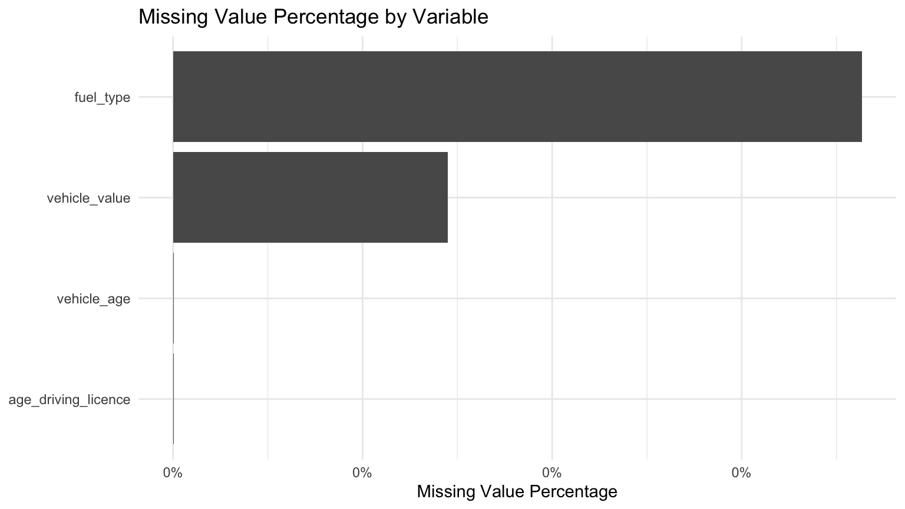
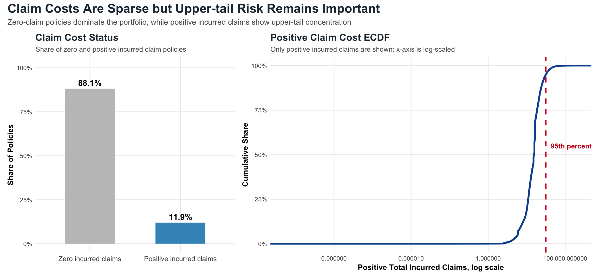
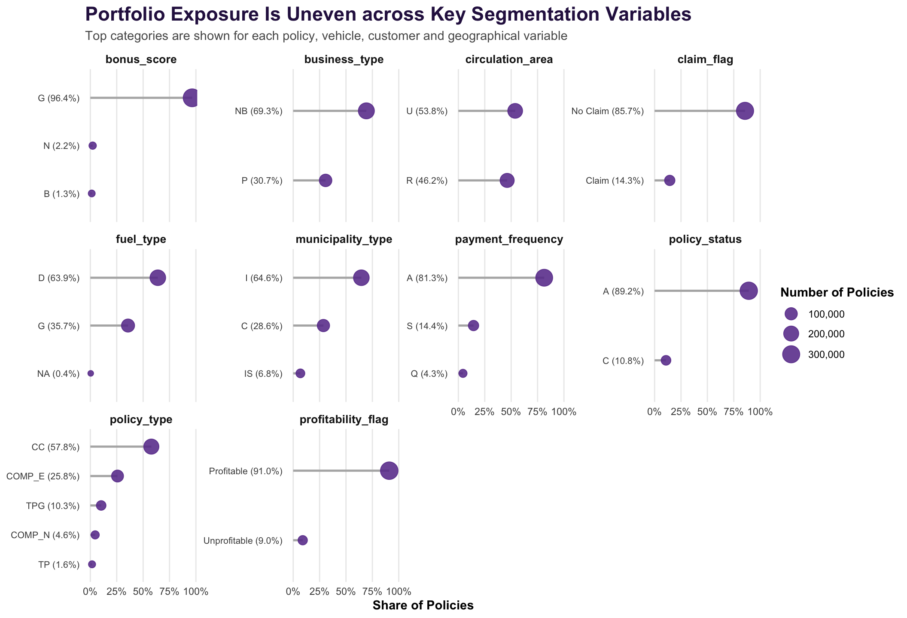
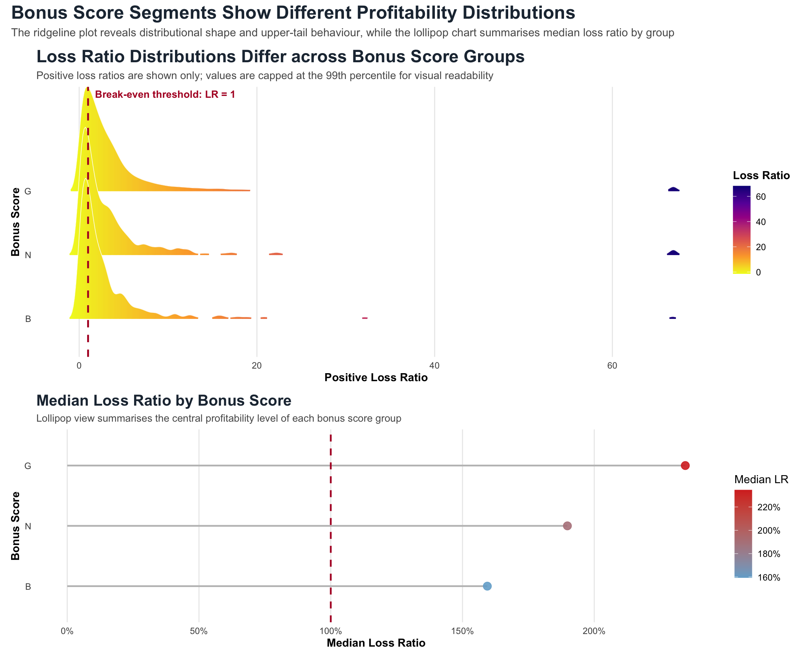
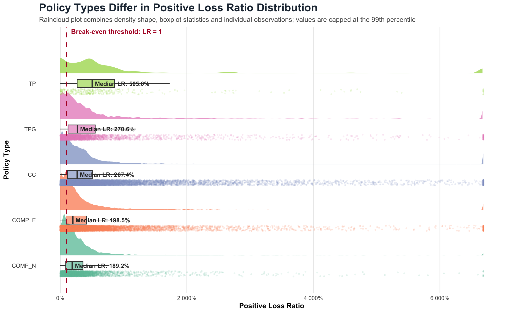
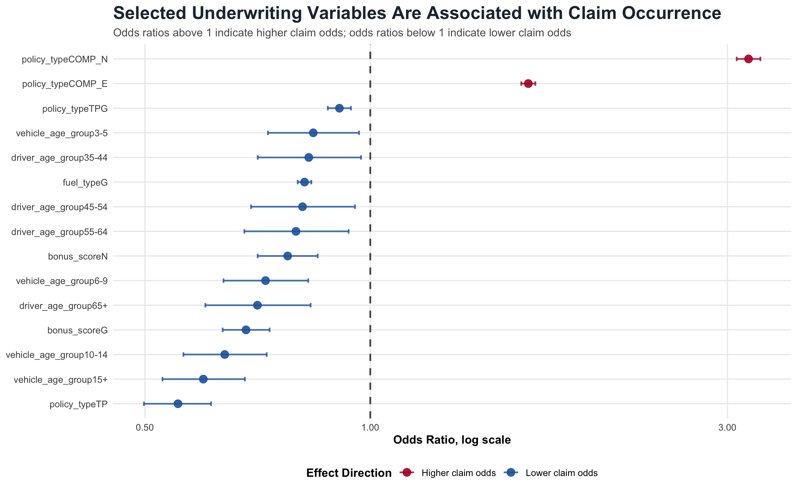

packages <- c(
"tidyverse",
"readxl",
"skimr",
"naniar",
"scales",
"ggridges",
"patchwork",
"ggrepel",
"plotly" ,
"DT" ,
"ggdist",
"colorspace" ,
"plotly" ,
"treemapify" ,
"ggdist" ,
"broom"
)
installed_packages <- rownames(installed.packages())
for (pkg in packages) {
if (!(pkg %in% installed_packages)) {
install.packages(pkg, dependencies = TRUE)
}
}Take Home Exercise 01
1. Overview
This take-home exercise applies visual analytics techniques to explore the profitability and volatility of a motor insurance portfolio.
1.1 Loading Packages
library(tidyverse)
library(readxl)
library(skimr)
library(naniar)
library(scales)
library(ggridges)
library(patchwork)
library(ggrepel)
library(plotly)
library(DT)
library(ggdist)
library(colorspace)
library(plotly)
library(treemapify)
library(ggdist)
library(broom)1.2 Import Data
The raw motor insurance portfolio dataset and the variable description file are imported into R. The motor insurance dataset is stored as a semicolon-separated CSV file, while the variable description is stored in an Excel workbook.
motor_raw <- read_delim(
"data/Dataset of motor insurance portfolio.csv",
delim = ";",
show_col_types = FALSE
)
cookbook_raw <- read_excel(
"data/Descriptive of variables.xlsx",
sheet = "Cartera"
)
import_summary <- tibble(
dataset = c("Motor insurance portfolio", "Variable description"),
source_file = c(
"Dataset of motor insurance portfolio.csv",
"Descriptive of variables.xlsx"
),
file_type = c("CSV, semicolon-separated", "Excel workbook"),
rows = c(nrow(motor_raw), nrow(cookbook_raw)),
columns = c(ncol(motor_raw), ncol(cookbook_raw))
)
variable_preview <- tibble(
variable = names(motor_raw),
data_type = map_chr(motor_raw, ~ class(.x)[1]),
n_unique = map_int(motor_raw, ~ n_distinct(.x, na.rm = TRUE)),
n_missing = map_int(motor_raw, ~ sum(is.na(.x)))
)1.3 Analytical Objective
This study aims to use visual analytics to identify the key drivers of profitability and volatility in a motor insurance portfolio. Profitability is evaluated mainly through loss ratio, while volatility is assessed by examining the dispersion of loss ratio and claim-related indicators across underwriting segments.
The analysis focuses on three dimensions. First, univariate visual analysis is used to understand the distributions of premium, claims, exposure, loss ratio, claim frequency and claim severity. Second, bivariate visual analysis is used to compare profitability and volatility across policy, customer, vehicle and geographical segments. Third, statistical validation is applied to assess whether selected segment-level differences are supported by formal tests.
The final objective is to provide evidence-based insights that can support pricing refinement, underwriting segmentation and portfolio monitoring.
2. Data Preparation
This section prepares the analytical sandbox for the visual analytics investigation. The raw motor insurance portfolio data is inspected, cleaned, and transformed into a policy-level analytical dataset. Key profitability and volatility indicators, including loss ratio, claim frequency, claim severity and pure premium, are derived to support subsequent visual analysis.
2.1 Inspect Data Structure
The imported dataset is first inspected to understand its overall structure, including the number of observations, number of variables, variable types, missing values and unique values. Instead of displaying raw console output, a compact data structure summary is created to improve readability.
data_structure_summary <- tibble(
item = c(
"Number of rows",
"Number of columns",
"Number of numeric variables",
"Number of character variables",
"Number of factor variables",
"Total missing values"
),
value = c(
nrow(motor_raw),
ncol(motor_raw),
sum(map_lgl(motor_raw, is.numeric)),
sum(map_lgl(motor_raw, is.character)),
sum(map_lgl(motor_raw, is.factor)),
sum(is.na(motor_raw))
)
)
variable_structure <- tibble(
variable = names(motor_raw),
data_type = map_chr(motor_raw, ~ class(.x)[1]),
n_unique = map_int(motor_raw, ~ n_distinct(.x, na.rm = TRUE)),
n_missing = map_int(motor_raw, ~ sum(is.na(.x))),
missing_percentage = map_dbl(motor_raw, ~ mean(is.na(.x)))
)The structure summary confirms the size and composition of the dataset. The variable-level table is used to identify the original data types and to support subsequent type conversion, missing value checking and analytical variable construction.
2.2 Inspect Variable Description
The variable description file is used as a reference for interpreting the insurance portfolio variables. It supports the selection of relevant variables related to policy characteristics, claims, exposure, premium, vehicle information and customer segmentation.
cookbook_preview <- cookbook_raw %>%
mutate(across(everything(), as.character))
cookbook_summary <- tibble(
item = c(
"Number of rows in variable description",
"Number of columns in variable description",
"Sheet used"
),
value = c(
nrow(cookbook_raw),
ncol(cookbook_raw),
"Cartera"
)
)The variable description file provides contextual information for interpreting the raw variables. It is particularly useful for identifying which fields should be treated as categorical variables, numerical variables and key insurance performance indicators.
2.3 Check Missing Values
Missing values are examined before constructing the analytical variables. This step helps identify whether any variables require filtering, transformation or special treatment before visual analysis.

missing_summary <- motor_raw %>%
summarise(
across(
everything(),
~ sum(is.na(.))
)
) %>%
pivot_longer(
cols = everything(),
names_to = "variable",
values_to = "missing_count"
) %>%
mutate(
missing_percentage = missing_count / nrow(motor_raw)
) %>%
arrange(desc(missing_count))
missing_summary_with_na <- missing_summary %>%
filter(missing_count > 0) %>%
arrange(desc(missing_percentage))
missing_overview <- tibble(
item = c(
"Total variables",
"Variables with missing values",
"Total missing cells",
"Overall missing cell percentage"
),
value = c(
ncol(motor_raw),
nrow(missing_summary_with_na),
sum(missing_summary$missing_count),
round(sum(missing_summary$missing_count) / (nrow(motor_raw) * ncol(motor_raw)), 6)
)
)The missing value assessment ensures that the analytical sandbox is constructed from a reliable base dataset. Since the subsequent indicators such as loss ratio, claim frequency and claim severity rely on premium, exposure, claim count and incurred claim amount, particular attention is paid to whether these key numerical fields contain missing observations.
2.4 Convert Variable Types
Categorical variables are converted into factor format to ensure that they are treated appropriately in grouped summaries, statistical comparisons and ggplot2-based visualisations. This step is necessary because variables such as policy type, policy status, fuel type and circulation area represent groups rather than continuous numerical measurements.
motor_clean <- motor_raw %>%
mutate(
year = as.factor(year),
insured_id = as.factor(insured_id),
policy_type = as.factor(policy_type),
policy_status = as.factor(policy_status),
business_type = as.factor(business_type),
payment_frequency = as.factor(payment_frequency),
bonus_score = as.factor(bonus_score),
fuel_type = as.factor(fuel_type),
vehicle_brand = as.factor(vehicle_brand),
municipality_type = as.factor(municipality_type),
circulation_area = as.factor(circulation_area)
)
converted_variables <- tibble(
converted_variable = c(
"year", "insured_id", "policy_type", "policy_status",
"business_type", "payment_frequency", "bonus_score",
"fuel_type", "vehicle_brand", "municipality_type",
"circulation_area"
),
converted_to = "factor"
)
variable_type_summary <- tibble(
variable = names(motor_clean),
data_type_after_conversion = map_chr(motor_clean, ~ class(.x)[1]),
n_unique = map_int(motor_clean, ~ n_distinct(.x, na.rm = TRUE)),
n_missing = map_int(motor_clean, ~ sum(is.na(.x))),
missing_percentage = map_dbl(motor_clean, ~ mean(is.na(.x)))
)The converted variables are mainly categorical policy, customer and vehicle characteristics. Converting them into factor format ensures that subsequent visual analytics can compare profitability and volatility across meaningful underwriting segments rather than treating these fields as continuous measurements.
2.5 Check Key Numerical Variables
The key numerical variables are inspected to identify invalid or extreme values. Since loss ratio, claim frequency and pure premium require positive premium and exposure values, records with non-positive premium or exposure are excluded from the analytical sandbox.
key_numerical_variables <- motor_clean %>%
select(
total_premium,
total_claims,
total_incurred,
total_exposure,
driver_age,
vehicle_age,
age_driving_licence
)
key_variable_check <- key_numerical_variables %>%
summarise(
across(
everything(),
list(
min = ~ min(.x, na.rm = TRUE),
q1 = ~ quantile(.x, 0.25, na.rm = TRUE),
median = ~ median(.x, na.rm = TRUE),
mean = ~ mean(.x, na.rm = TRUE),
q3 = ~ quantile(.x, 0.75, na.rm = TRUE),
max = ~ max(.x, na.rm = TRUE)
),
.names = "{.col}_{.fn}"
)
) %>%
pivot_longer(
cols = everything(),
names_to = "indicator",
values_to = "value"
)
invalid_check <- motor_clean %>%
summarise(
n_zero_or_negative_premium = sum(total_premium <= 0, na.rm = TRUE),
n_zero_or_negative_exposure = sum(total_exposure <= 0, na.rm = TRUE),
n_negative_incurred = sum(total_incurred < 0, na.rm = TRUE),
n_negative_claims = sum(total_claims < 0, na.rm = TRUE),
n_negative_driver_age = sum(driver_age < 0, na.rm = TRUE),
n_negative_vehicle_age = sum(vehicle_age < 0, na.rm = TRUE)
) %>%
pivot_longer(
cols = everything(),
names_to = "invalid_condition",
values_to = "count"
)The numerical checks focus on the variables required to construct insurance performance indicators. Positive premium and exposure are necessary because they are used as denominators in loss ratio, claim frequency and pure premium calculations.
2.6 Create Analytical Variables
Several analytical variables are derived to support portfolio-level profitability and volatility analysis. Loss ratio measures claims relative to premium, claim frequency measures the number of claims relative to exposure, claim severity measures the average incurred amount per claim, and pure premium measures incurred claims per unit of exposure.
motor_analysis <- motor_clean %>%
filter(
total_premium > 0,
total_exposure > 0
) %>%
mutate(
loss_ratio = total_incurred / total_premium,
claim_frequency = total_claims / total_exposure,
pure_premium = total_incurred / total_exposure,
claim_severity = if_else(
total_claims > 0,
total_incurred / total_claims,
NA_real_
),
claim_flag = if_else(total_claims > 0, "Claim", "No Claim"),
profitability_flag = case_when(
loss_ratio > 1 ~ "Unprofitable",
loss_ratio <= 1 ~ "Profitable",
TRUE ~ NA_character_
)
)The analytical dataset excludes records with non-positive premium or exposure because these values would make the key insurance ratios undefined or economically meaningless. The derived variables provide the foundation for analysing both profitability and volatility across underwriting segments.
2.7 Cap Extreme Values for Visualisation
Insurance claim variables are usually highly right-skewed because a small number of large claims may dominate the total incurred amount. Therefore, capped versions of selected variables are created at the 99th percentile for visualisation purposes. The original values are retained for portfolio-level aggregation and statistical analysis.
loss_ratio_cap <- quantile(
motor_analysis$loss_ratio,
0.99,
na.rm = TRUE
)
incurred_cap <- quantile(
motor_analysis$total_incurred,
0.99,
na.rm = TRUE
)
severity_cap <- quantile(
motor_analysis$claim_severity,
0.99,
na.rm = TRUE
)
motor_analysis <- motor_analysis %>%
mutate(
loss_ratio_capped = pmin(loss_ratio, loss_ratio_cap),
total_incurred_capped = pmin(total_incurred, incurred_cap),
claim_severity_capped = pmin(claim_severity, severity_cap)
)The capped variables are used only for visualisation. They prevent extreme claims from compressing the main body of the distribution, while the original uncapped values remain available for portfolio-level aggregation and statistical validation.
2.8 Check Derived Indicators
The derived indicators are summarised to provide an initial overview of the portfolio. Portfolio-level loss ratio is computed using total incurred claims divided by total premium, which is more appropriate than taking the simple average of policy-level loss ratios because it reflects the aggregate profitability of the portfolio.
derived_summary <- motor_analysis %>%
summarise(
n_policies = n(),
total_premium = sum(total_premium, na.rm = TRUE),
total_incurred = sum(total_incurred, na.rm = TRUE),
total_claims = sum(total_claims, na.rm = TRUE),
total_exposure = sum(total_exposure, na.rm = TRUE),
portfolio_loss_ratio = total_incurred / total_premium,
average_loss_ratio = mean(loss_ratio, na.rm = TRUE),
median_loss_ratio = median(loss_ratio, na.rm = TRUE),
portfolio_claim_frequency = total_claims / total_exposure,
average_claim_severity = total_incurred / total_claims,
pure_premium = total_incurred / total_exposure,
claim_rate = mean(total_claims > 0, na.rm = TRUE),
unprofitable_rate = mean(loss_ratio > 1, na.rm = TRUE)
) %>%
pivot_longer(
cols = everything(),
names_to = "indicator",
values_to = "value"
)These indicators provide the analytical basis for the subsequent visual analytics sections. In particular, loss ratio is used to assess profitability, while standard deviation and interquartile range of loss ratio are later used to examine volatility across underwriting segments.
2.9 Create Segment-level Summary
A segment-level summary table is created to support profitability and volatility analysis across underwriting segments. Small segments with fewer than 100 policies are excluded to reduce the risk of unstable estimates driven by very small sample sizes.
segment_summary <- motor_analysis %>%
group_by(
driver_age_group,
vehicle_age_group,
policy_type,
bonus_score
) %>%
summarise(
n_policies = n(),
total_premium = sum(total_premium, na.rm = TRUE),
total_incurred = sum(total_incurred, na.rm = TRUE),
total_claims = sum(total_claims, na.rm = TRUE),
total_exposure = sum(total_exposure, na.rm = TRUE),
portfolio_loss_ratio = total_incurred / total_premium,
claim_frequency = total_claims / total_exposure,
claim_severity = if_else(
total_claims > 0,
total_incurred / total_claims,
NA_real_
),
pure_premium = total_incurred / total_exposure,
sd_loss_ratio = sd(loss_ratio, na.rm = TRUE),
iqr_loss_ratio = IQR(loss_ratio, na.rm = TRUE),
.groups = "drop"
) %>%
filter(n_policies >= 100) %>%
arrange(desc(portfolio_loss_ratio))The segment-level summary provides the foundation for later bivariate and multivariate visual analysis. Portfolio loss ratio is used to assess profitability, while the standard deviation and interquartile range of policy-level loss ratio are used as volatility indicators.
3. Univariate Visual Analysis
This section applies selected univariate visual analytics techniques to understand the distributional characteristics of the motor insurance portfolio. Instead of producing many isolated basic charts, this section focuses on a smaller set of composite visualisations. Each visualisation is designed to reveal a specific feature of the portfolio, including premium distribution, claim sparsity, profitability threshold, upper-tail behaviour and portfolio composition.
3.1 Premium Distribution with Quartile Bands
Total premium is examined to understand how policy-level premium income is distributed across the portfolio. The chart uses quartile bands to show the relative position of low-, medium- and high-premium policies. This approach is more informative than a plain histogram because it shows both the distribution shape and the premium segmentation structure.

premium_cap <- quantile(
motor_analysis$total_premium,
0.99,
na.rm = TRUE
)
premium_plot_data <- motor_analysis %>%
mutate(
total_premium_capped = pmin(total_premium, premium_cap),
premium_quartile = ntile(total_premium_capped, 4)
)
premium_quartile_plot <- ggplot(
premium_plot_data,
aes(
x = total_premium_capped,
fill = factor(premium_quartile)
)
) +
geom_histogram(
aes(y = after_stat(density)),
bins = 55,
color = "white"
) +
geom_density(color = "#253494") +
geom_vline(
xintercept = median(premium_plot_data$total_premium, na.rm = TRUE),
linetype = "dashed"
) +
theme_minimal()The quartile-based view shows that premium is not evenly distributed across policies. The density overlay reveals the overall shape of the distribution, while the quartile colours help distinguish lower-premium policies from the higher-premium tail. This provides an initial view of the portfolio’s income base before linking premium to claim outcomes in later sections.
3.2 Claim Cost Sparsity and Upper-tail Behaviour
Total incurred claims are examined to understand the distribution of policy-level claim costs. Since many policies have zero incurred claims, directly plotting all policies in one histogram would hide the distribution among positive-claim policies. This section therefore combines a zero-versus-positive claim status chart with an ECDF of positive incurred claims.

incurred_plot_data <- motor_analysis %>%
mutate(
incurred_status = if_else(
total_incurred > 0,
"Positive incurred claims",
"Zero incurred claims"
)
)
positive_incurred_data <- incurred_plot_data %>%
filter(total_incurred > 0)
incurred_status_summary <- incurred_plot_data %>%
count(incurred_status, name = "n_policies") %>%
mutate(
percentage = n_policies / sum(n_policies)
)
incurred_status_plot <- ggplot(
incurred_status_summary,
aes(x = incurred_status, y = percentage, fill = incurred_status)
) +
geom_col(width = 0.55) +
geom_text(
aes(label = percent(percentage, accuracy = 0.1)),
vjust = -0.5
) +
scale_y_continuous(labels = percent_format()) +
theme_minimal()
positive_incurred_ecdf_plot <- ggplot(
positive_incurred_data,
aes(x = total_incurred)
) +
stat_ecdf() +
scale_x_log10(labels = comma) +
scale_y_continuous(labels = percent_format()) +
theme_minimal()
incurred_combined_plot <- incurred_status_plot + positive_incurred_ecdf_plot +
plot_layout(widths = c(0.9, 1.45))The zero-versus-positive view highlights the sparsity of claim costs in the portfolio. The ECDF focuses only on positive incurred claims, making the upper-tail behaviour easier to interpret without being dominated by the large mass of zero-claim policies.
3.3 Loss Ratio Profitability Threshold
Loss ratio is the key profitability indicator in this analysis. However, many policies have zero incurred claims, creating a large spike at loss ratio equal to zero. To avoid hiding the positive-loss-ratio distribution, policies are first grouped into zero-loss, profitable positive-loss and unprofitable categories. The positive loss ratio ECDF then shows how far policies extend beyond the break-even threshold.

loss_ratio_plot_data <- motor_analysis %>%
mutate(
loss_ratio_group = case_when(
loss_ratio == 0 ~ "Loss ratio = 0",
loss_ratio > 0 & loss_ratio <= 1 ~ "Profitable: 0 < LR <= 1",
loss_ratio > 1 ~ "Unprofitable: LR > 1"
)
)
positive_loss_ratio_data <- loss_ratio_plot_data %>%
filter(loss_ratio > 0)
loss_ratio_group_summary <- loss_ratio_plot_data %>%
count(loss_ratio_group, name = "n_policies") %>%
mutate(
percentage = n_policies / sum(n_policies)
)
loss_ratio_group_plot <- ggplot(
loss_ratio_group_summary,
aes(x = loss_ratio_group, y = percentage, fill = loss_ratio_group)
) +
geom_col(width = 0.6) +
geom_text(
aes(label = percent(percentage, accuracy = 0.1)),
vjust = -0.5
) +
theme_minimal()
positive_loss_ratio_ecdf_plot <- ggplot(
positive_loss_ratio_data,
aes(x = loss_ratio)
) +
stat_ecdf() +
geom_vline(xintercept = 1, linetype = "dashed") +
scale_x_log10(labels = comma) +
scale_y_continuous(labels = percent_format()) +
theme_minimal()
loss_ratio_combined_plot <- loss_ratio_group_plot + positive_loss_ratio_ecdf_plot +
plot_layout(widths = c(0.95, 1.45))The loss ratio grouping view gives a compact summary of policy-level profitability structure. The positive loss ratio ECDF avoids distortion caused by zero-loss policies and shows how the positive-loss portion of the portfolio behaves relative to the break-even threshold.
3.4 Portfolio Composition across Key Segmentation Variables
Selected categorical variables are examined to understand the composition of the insurance portfolio across policy, customer, vehicle and geographical characteristics. A lollipop chart is used because it highlights dominant categories more clearly than a dense grouped bar chart and allows multiple segmentation variables to be compared in a compact layout.

categorical_summary <- motor_analysis %>%
select(
policy_type,
policy_status,
business_type,
payment_frequency,
bonus_score,
fuel_type,
municipality_type,
circulation_area,
claim_flag,
profitability_flag
) %>%
pivot_longer(
cols = everything(),
names_to = "variable",
values_to = "category"
) %>%
count(
variable,
category,
name = "n"
) %>%
group_by(variable) %>%
mutate(
percentage = n / sum(n)
) %>%
ungroup()
top_categorical_summary <- categorical_summary %>%
group_by(variable) %>%
slice_max(
order_by = n,
n = 8,
with_ties = FALSE
) %>%
ungroup()
categorical_lollipop_plot <- ggplot(
top_categorical_summary,
aes(
x = percentage,
y = reorder(category, percentage)
)
) +
geom_segment(
aes(x = 0, xend = percentage, yend = reorder(category, percentage)),
color = "grey70"
) +
geom_point(
aes(size = n),
color = "#6A3D9A"
) +
facet_wrap(
~ variable,
scales = "free_y"
) +
scale_x_continuous(labels = percent_format()) +
theme_minimal()The portfolio composition view shows whether the dataset is concentrated in specific policy, vehicle, customer or geographical groups. This matters because uneven portfolio composition may influence subsequent profitability and volatility comparisons. If a few categories dominate the portfolio, their claim behaviour may have a larger effect on aggregate portfolio performance.
3.5 Summary of Univariate Findings
The univariate visual analysis provides four key observations about the motor insurance portfolio. First, premium is unevenly distributed across policies, with most policies concentrated in lower-to-medium premium bands and a smaller group contributing higher premium amounts. Second, incurred claims are sparse: many policies have zero incurred claims, while positive incurred claims exhibit upper-tail behaviour. Third, loss ratio analysis shows that zero-loss policies dominate the portfolio, but the positive-loss portion contains an important unprofitable tail beyond the break-even threshold of loss ratio equal to 1. Finally, categorical composition is uneven across key policy, vehicle, customer and geographical variables.
These findings suggest that subsequent analysis should not rely only on aggregate portfolio averages. Instead, profitability and volatility should be examined across underwriting segments, with particular attention to high-loss-ratio groups, positive-claim policies and segments that combine meaningful exposure with adverse claim experience.
4. Bivariate and Multivariate Visual Analysis
This section applies bivariate and multivariate visual analytics techniques to investigate how policy, customer and vehicle characteristics are associated with portfolio profitability and volatility. Unlike the univariate section, which focuses on individual distributions, this section compares underwriting segments and identifies combinations of factors that may contribute to high loss ratio, claim frequency, claim severity and volatility.
4.1 Loss Ratio by Driver Age and Vehicle Age
Driver age and vehicle age are two important segmentation variables in motor insurance underwriting. This section uses a heatmap to examine how portfolio loss ratio varies across combinations of driver age group and vehicle age group. A companion lollipop chart highlights the highest-loss-ratio age-vehicle segments, allowing high-risk combinations to be identified more directly.

overall_portfolio_loss_ratio <- motor_analysis %>%
summarise(
portfolio_loss_ratio = sum(total_incurred, na.rm = TRUE) /
sum(total_premium, na.rm = TRUE)
) %>%
pull(portfolio_loss_ratio)
age_vehicle_summary <- motor_analysis %>%
group_by(
driver_age_group,
vehicle_age_group
) %>%
summarise(
n_policies = n(),
total_premium = sum(total_premium, na.rm = TRUE),
total_incurred = sum(total_incurred, na.rm = TRUE),
total_claims = sum(total_claims, na.rm = TRUE),
total_exposure = sum(total_exposure, na.rm = TRUE),
portfolio_loss_ratio = total_incurred / total_premium,
claim_frequency = total_claims / total_exposure,
claim_severity = if_else(
total_claims > 0,
total_incurred / total_claims,
NA_real_
),
pure_premium = total_incurred / total_exposure,
.groups = "drop"
) %>%
filter(n_policies >= 100)
age_vehicle_heatmap <- ggplot(
age_vehicle_summary,
aes(
x = vehicle_age_group,
y = driver_age_group,
fill = portfolio_loss_ratio
)
) +
geom_tile(color = "white") +
geom_text(
aes(label = round(portfolio_loss_ratio, 2)),
size = 3
) +
scale_fill_gradient2(
low = "#D1E5F0",
mid = "#FFFFBF",
high = "#B2182B",
midpoint = overall_portfolio_loss_ratio
) +
theme_minimal()
top_age_vehicle_segments <- age_vehicle_summary %>%
arrange(desc(portfolio_loss_ratio)) %>%
slice_head(n = 10) %>%
mutate(
segment = paste0(
"Driver ", driver_age_group,
" | Vehicle ", vehicle_age_group
),
segment = fct_reorder(segment, portfolio_loss_ratio)
)
top_age_vehicle_lollipop <- ggplot(
top_age_vehicle_segments,
aes(
x = portfolio_loss_ratio,
y = segment
)
) +
geom_segment(
aes(x = 0, xend = portfolio_loss_ratio, yend = segment),
color = "grey75"
) +
geom_point() +
geom_vline(
xintercept = overall_portfolio_loss_ratio,
linetype = "dashed"
) +
theme_minimal()
age_vehicle_combined_plot <- age_vehicle_heatmap + top_age_vehicle_lollipop +
plot_layout(widths = c(1.15, 1.1))The heatmap shows how loss ratio changes across combinations of driver age and vehicle age. This is useful because risk may not be driven by driver age or vehicle age alone, but by their interaction. The lollipop chart complements the heatmap by isolating the worst-performing combinations. Segments with both high loss ratio and meaningful policy count should receive closer attention in later underwriting and pricing analysis.
4.2 Interactive Bubble Plot of Claim Frequency and Claim Severity
Claim frequency and claim severity represent two different mechanisms of insurance risk. A segment may be unprofitable because claims occur frequently, because claims are severe when they occur, or because both frequency and severity are high. This section uses an interactive bubble plot to compare underwriting segments based on claim frequency, claim severity, segment size and portfolio loss ratio.
frequency_severity_summary <- motor_analysis %>%
group_by(
driver_age_group,
vehicle_age_group,
policy_type
) %>%
summarise(
n_policies = n(),
total_premium = sum(total_premium, na.rm = TRUE),
total_incurred = sum(total_incurred, na.rm = TRUE),
total_claims = sum(total_claims, na.rm = TRUE),
total_exposure = sum(total_exposure, na.rm = TRUE),
portfolio_loss_ratio = total_incurred / total_premium,
claim_frequency = total_claims / total_exposure,
claim_severity = if_else(
total_claims > 0,
total_incurred / total_claims,
NA_real_
),
pure_premium = total_incurred / total_exposure,
.groups = "drop"
) %>%
filter(
n_policies >= 100,
total_claims > 0,
!is.na(claim_severity),
claim_frequency > 0
) %>%
mutate(
segment = paste0(
"Driver ", driver_age_group,
" | Vehicle ", vehicle_age_group,
" | ", policy_type
)
)
frequency_median <- median(
frequency_severity_summary$claim_frequency,
na.rm = TRUE
)
severity_median <- median(
frequency_severity_summary$claim_severity,
na.rm = TRUE
)
frequency_severity_summary <- frequency_severity_summary %>%
mutate(
risk_quadrant = case_when(
claim_frequency >= frequency_median &
claim_severity >= severity_median ~ "High frequency / High severity",
claim_frequency >= frequency_median &
claim_severity < severity_median ~ "High frequency / Low severity",
claim_frequency < frequency_median &
claim_severity >= severity_median ~ "Low frequency / High severity",
TRUE ~ "Low frequency / Low severity"
),
hover_text = paste0(
"<b>Segment:</b> ", segment, "<br>",
"<b>Number of Policies:</b> ", comma(n_policies), "<br>",
"<b>Claim Frequency:</b> ", round(claim_frequency, 4), "<br>",
"<b>Claim Severity:</b> ", comma(round(claim_severity, 2)), "<br>",
"<b>Loss Ratio:</b> ", percent(portfolio_loss_ratio, accuracy = 0.1), "<br>",
"<b>Risk Quadrant:</b> ", risk_quadrant
)
)
frequency_severity_bubble_plot <- plot_ly(
data = frequency_severity_summary,
x = ~claim_frequency,
y = ~claim_severity,
type = "scatter",
mode = "markers",
text = ~hover_text,
hoverinfo = "text",
color = ~portfolio_loss_ratio,
colors = c("#2166AC", "#F7F7F7", "#B2182B"),
size = ~n_policies,
sizes = c(8, 45),
marker = list(
opacity = 0.72,
line = list(
color = "rgba(40, 40, 40, 0.55)",
width = 1
)
)
) %>%
layout(
hovermode = "closest",
xaxis = list(title = "Claim Frequency"),
yaxis = list(title = "Claim Severity")
)The interactive bubble plot allows each underwriting segment to be inspected directly by hovering over the bubble. This supports exploratory visual analytics because segment-level information such as policy count, total premium, incurred claims, claim frequency, claim severity and loss ratio can be examined without overcrowding the chart. Larger bubbles represent larger segments, while warmer colours indicate higher loss ratios. Segments in the upper-right area are particularly important because they combine high claim frequency with high claim severity.
4.3 Ridgeline Plot of Loss Ratio by Bonus Score
Bonus score is an important risk segmentation variable in motor insurance. Instead of comparing only average loss ratios, this section uses a ridgeline plot to examine the distribution of positive loss ratios across bonus score groups. This helps reveal whether certain bonus score groups have wider distributions, heavier upper tails, or more concentrated profitability patterns.

bonus_loss_ratio_data <- motor_analysis %>%
filter(
loss_ratio > 0,
!is.na(bonus_score)
) %>%
group_by(bonus_score) %>%
mutate(
n_in_bonus_score = n()
) %>%
ungroup() %>%
filter(
n_in_bonus_score >= 100
) %>%
mutate(
loss_ratio_positive_capped = pmin(
loss_ratio,
quantile(loss_ratio, 0.99, na.rm = TRUE)
),
bonus_score = fct_reorder(
bonus_score,
loss_ratio,
.fun = median,
.na_rm = TRUE
)
)
bonus_score_ridgeline_plot <- ggplot(
bonus_loss_ratio_data,
aes(
x = loss_ratio_positive_capped,
y = bonus_score,
fill = after_stat(x)
)
) +
ggridges::geom_density_ridges_gradient(
scale = 2.2,
rel_min_height = 0.01,
alpha = 0.88,
color = "white"
) +
geom_vline(
xintercept = 1,
linetype = "dashed",
color = "#B2182B"
) +
scale_fill_viridis_c(
option = "C",
direction = -1
) +
theme_minimal()The ridgeline plot shows how the full positive loss ratio distribution varies across bonus score groups. This is more informative than a simple average comparison because it reveals distributional spread and upper-tail behaviour. The break-even line at loss ratio equal to 1 helps identify which groups are more likely to contain unprofitable policies. The lollipop chart complements the ridgeline view by summarising the median loss ratio for each bonus score group.
4.4 Treemap of Premium Contribution and Loss Ratio
Portfolio profitability should be interpreted together with portfolio size. A small segment with high loss ratio may be risky, but a large segment with high loss ratio can have a stronger impact on total portfolio performance. This section uses a treemap to visualise premium contribution and loss ratio at the same time. The area of each rectangle represents total premium, while the colour represents portfolio loss ratio.

treemap_segment_data <- motor_analysis %>%
group_by(
policy_type,
fuel_type
) %>%
summarise(
n_policies = n(),
total_premium = sum(total_premium, na.rm = TRUE),
total_incurred = sum(total_incurred, na.rm = TRUE),
total_claims = sum(total_claims, na.rm = TRUE),
total_exposure = sum(total_exposure, na.rm = TRUE),
portfolio_loss_ratio = total_incurred / total_premium,
claim_frequency = total_claims / total_exposure,
claim_severity = if_else(
total_claims > 0,
total_incurred / total_claims,
NA_real_
),
pure_premium = total_incurred / total_exposure,
.groups = "drop"
) %>%
filter(
n_policies >= 100,
total_premium > 0,
!is.na(policy_type),
!is.na(fuel_type)
) %>%
mutate(
premium_share = total_premium / sum(total_premium, na.rm = TRUE),
segment_label = paste0(
"Policy: ", policy_type,
"\nFuel: ", fuel_type,
"\nLR: ", percent(portfolio_loss_ratio, accuracy = 0.1),
"\nPremium: ", percent(premium_share, accuracy = 0.1)
)
)
premium_loss_ratio_treemap <- ggplot(
treemap_segment_data,
aes(
area = total_premium,
fill = portfolio_loss_ratio,
subgroup = policy_type,
label = segment_label
)
) +
treemapify::geom_treemap(
color = "white",
linewidth = 1.1,
alpha = 0.96
) +
treemapify::geom_treemap_subgroup_border(
color = "grey25",
linewidth = 1.4
) +
treemapify::geom_treemap_text(
color = "white",
place = "centre",
reflow = TRUE,
grow = FALSE,
size = 4.2,
min.size = 3,
fontface = "bold"
) +
scale_fill_gradient2(
low = "#2166AC",
mid = "#F7F7F7",
high = "#B2182B",
midpoint = overall_portfolio_loss_ratio,
labels = percent_format(accuracy = 1)
) +
labs(
title = "Large Premium Segments Do Not Always Have Low Loss Ratios",
subtitle = "Rectangle area represents total premium; colour represents portfolio loss ratio",
fill = "Loss Ratio"
) +
theme_void()The treemap links portfolio size and profitability in one view. Large rectangles represent segments that contribute more premium to the portfolio, while redder colours indicate higher loss ratios. This helps distinguish small high-risk segments from large segments that may have a greater impact on aggregate profitability. Segments that are both large and red should be prioritised for further underwriting and pricing review.
4.5 Raincloud Plot of Positive Loss Ratio by Policy Type
Policy type is examined using a raincloud-style visualisation. This plot combines density shape, individual observations and boxplot statistics in one view. Compared with a simple boxplot, the raincloud plot provides a richer view of distributional differences across policy types, including central tendency, dispersion and upper-tail profitability risk.

policy_type_raincloud_data <- motor_analysis %>%
filter(
loss_ratio > 0,
!is.na(policy_type)
) %>%
group_by(policy_type) %>%
mutate(
n_policy_type = n()
) %>%
ungroup() %>%
filter(
n_policy_type >= 100
) %>%
mutate(
loss_ratio_positive_capped = pmin(
loss_ratio,
quantile(loss_ratio, 0.99, na.rm = TRUE)
),
policy_type = fct_reorder(
policy_type,
loss_ratio,
.fun = median,
.na_rm = TRUE
)
)
policy_type_summary <- policy_type_raincloud_data %>%
group_by(policy_type) %>%
summarise(
n_policies = n(),
median_loss_ratio = median(loss_ratio, na.rm = TRUE),
mean_loss_ratio = mean(loss_ratio, na.rm = TRUE),
p75_loss_ratio = quantile(loss_ratio, 0.75, na.rm = TRUE),
p90_loss_ratio = quantile(loss_ratio, 0.90, na.rm = TRUE),
p95_loss_ratio = quantile(loss_ratio, 0.95, na.rm = TRUE),
.groups = "drop"
)
policy_type_raincloud_plot <- ggplot(
policy_type_raincloud_data,
aes(
x = loss_ratio_positive_capped,
y = policy_type,
fill = policy_type,
colour = policy_type
)
) +
ggdist::stat_halfeye(
adjust = 0.7,
width = 0.65,
justification = -0.25,
.width = 0,
point_colour = NA,
alpha = 0.75
) +
geom_boxplot(
width = 0.18,
outlier.shape = NA,
alpha = 0.65,
colour = "grey25"
) +
geom_point(
aes(
x = loss_ratio_positive_capped,
y = as.numeric(policy_type) - 0.18
),
position = position_jitter(
height = 0.06,
width = 0
),
alpha = 0.12,
size = 0.65,
show.legend = FALSE
) +
geom_vline(
xintercept = 1,
linetype = "dashed",
color = "#B2182B"
) +
scale_x_continuous(
labels = percent_format(accuracy = 1)
) +
scale_fill_brewer(
palette = "Set2"
) +
scale_colour_brewer(
palette = "Set2"
) +
theme_minimal()The raincloud plot shows how positive loss ratio distributions differ across policy types. The density layer reveals the shape of each distribution, the boxplot summarises the median and interquartile range, and the jittered points show individual policy-level observations. The break-even line at loss ratio equal to 1 helps identify which policy types have heavier unprofitable tails.
4.6 Small Multiples of Portfolio Performance over Time
Temporal analysis is used to examine whether portfolio performance changes across years. Instead of looking at only one metric, this section compares multiple insurance performance indicators over time, including portfolio loss ratio, claim frequency, claim severity and pure premium. A small multiples design is used so that each indicator can be interpreted separately while still sharing the same time dimension.

time_performance_summary <- motor_analysis %>%
group_by(year) %>%
summarise(
n_policies = n(),
total_premium = sum(total_premium, na.rm = TRUE),
total_incurred = sum(total_incurred, na.rm = TRUE),
total_claims = sum(total_claims, na.rm = TRUE),
total_exposure = sum(total_exposure, na.rm = TRUE),
portfolio_loss_ratio = total_incurred / total_premium,
claim_frequency = total_claims / total_exposure,
claim_severity = if_else(
total_claims > 0,
total_incurred / total_claims,
NA_real_
),
pure_premium = total_incurred / total_exposure,
.groups = "drop"
) %>%
mutate(
year = as.character(year)
)
time_performance_long <- time_performance_summary %>%
select(
year,
portfolio_loss_ratio,
claim_frequency,
claim_severity,
pure_premium
) %>%
pivot_longer(
cols = -year,
names_to = "indicator",
values_to = "value"
)
time_performance_small_multiples <- ggplot(
time_performance_long,
aes(
x = year,
y = value,
group = indicator
)
) +
geom_line(
linewidth = 1.1,
color = "#2C7FB8"
) +
geom_point(
size = 3,
color = "#D95F0E"
) +
facet_wrap(
~ indicator,
scales = "free_y",
ncol = 2
) +
theme_minimal()The small multiples chart compares several portfolio performance indicators over the same time dimension. This design avoids placing indicators with different units on the same axis. If loss ratio, claim frequency, claim severity and pure premium move differently across years, it suggests that changes in profitability may be driven by different claim mechanisms over time rather than by a single factor.
4.7 Summary of Bivariate and Multivariate Findings
The bivariate and multivariate visual analysis shows that portfolio profitability and volatility are driven by multiple interacting factors rather than by a single variable. The heatmap of driver age and vehicle age indicates that certain age-vehicle combinations have significantly higher loss ratios. For example, drivers aged 45–54 with vehicles aged 0–2 and 10–14 appear to be particularly high-risk segments, with loss ratios exceeding or approaching the loss-making threshold. This suggests that driver age and vehicle age should be considered jointly in underwriting segmentation.
The interactive frequency-severity bubble plot further decomposes portfolio risk into claim frequency and claim severity. Some segments show higher claim frequency, while others show higher claim severity. This distinction is important because the same loss ratio may be caused by different claim mechanisms. Segments with both high frequency and high severity should receive stronger underwriting attention, especially when they also represent a meaningful number of policies.
The ridgeline plot by bonus score shows that positive loss ratio distributions are highly right-skewed across all bonus score groups. This indicates that profitability risk is not fully captured by average loss ratio alone. Some bonus score groups may contain heavier upper-tail losses, suggesting that distributional shape and tail behaviour should be considered when evaluating risk groups.
The treemap links portfolio size with profitability. It shows that large premium segments do not always have the lowest loss ratios. Some segments contribute a meaningful share of total premium while also showing relatively high loss ratios. These segments are more important from a portfolio management perspective because their impact on aggregate profitability is larger than small high-loss segments.
The raincloud plot by policy type provides a more detailed view of positive loss ratio distributions. The combination of density shape, boxplot and individual observations shows that policy types differ not only in their central loss ratio levels, but also in their dispersion and upper-tail behaviour. This reinforces the need to monitor policy types using distribution-based visual analytics rather than relying only on summary averages.
The time-series small multiples show that portfolio performance worsened in 2024. Portfolio loss ratio increased to approximately 74.7%, while claim frequency rose to around 0.312. Claim severity and pure premium also increased in 2024 after declining in 2023. This suggests that the deterioration in portfolio profitability was not caused by a single factor, but by both higher claim frequency and higher claim cost pressure.
Overall, the fourth section shows that high-risk portfolio segments are shaped by the interaction between demographic, vehicle, policy and claim-related factors. The most important segments for further review are those that combine high loss ratio, meaningful premium exposure, high claim frequency or severity, and worsening recent performance.
5. Statistical Validation
Statistical validation is used to support the visual findings from the previous section. The purpose is not to replace visual analytics, but to provide additional evidence on whether the observed segment-level differences are statistically meaningful. Since insurance loss ratio data is highly right-skewed and contains extreme values, non-parametric tests are used where appropriate.
5.1 Kruskal-Wallis Test for Positive Loss Ratio by Policy Type
The raincloud plot in Section 4.5 shows that positive loss ratio distributions differ across policy types. To statistically validate this visual finding, a Kruskal-Wallis test is applied. This non-parametric test is suitable because positive loss ratio is highly skewed and does not follow a normal distribution.
The null hypothesis is that the positive loss ratio distributions are the same across policy types. The alternative hypothesis is that at least one policy type has a different positive loss ratio distribution.
policy_type_test_data <- motor_analysis %>%
filter(
loss_ratio > 0,
!is.na(policy_type)
) %>%
group_by(policy_type) %>%
mutate(
n_policy_type = n()
) %>%
ungroup() %>%
filter(
n_policy_type >= 100
)
policy_type_kruskal <- kruskal.test(
loss_ratio ~ policy_type,
data = policy_type_test_data
)
policy_type_pairwise <- pairwise.wilcox.test(
x = policy_type_test_data$loss_ratio,
g = policy_type_test_data$policy_type,
p.adjust.method = "BH"
)The Kruskal-Wallis test indicates statistically significant differences in positive loss ratio across policy types. This supports the visual pattern observed in the raincloud plot. However, because the sample size is large, the result should be interpreted together with effect size and distributional differences rather than relying only on the p-value.
The test result should be interpreted together with the raincloud plot in Section 4.5. A statistically significant result indicates that policy type is associated with differences in positive loss ratio distribution, but it does not by itself show which policy type is most important from a portfolio management perspective. Therefore, the statistical evidence should be combined with visual evidence such as distribution shape, median loss ratio, tail behaviour and premium contribution.
5.2 Kruskal-Wallis Test for Positive Loss Ratio by Bonus Score
The ridgeline plot in Section 4.3 suggests that positive loss ratio distributions vary across bonus score groups. To validate this visual pattern, a Kruskal-Wallis test is applied. This test is appropriate because positive loss ratio is highly right-skewed and contains extreme values, making a non-parametric comparison more suitable than a standard ANOVA.
The null hypothesis is that positive loss ratio distributions are the same across bonus score groups. The alternative hypothesis is that at least one bonus score group has a different positive loss ratio distribution.
bonus_score_test_data <- motor_analysis %>%
filter(
loss_ratio > 0,
!is.na(bonus_score)
) %>%
group_by(bonus_score) %>%
mutate(
n_bonus_score = n()
) %>%
ungroup() %>%
filter(
n_bonus_score >= 100
)
bonus_score_kruskal <- kruskal.test(
loss_ratio ~ bonus_score,
data = bonus_score_test_data
)
bonus_score_pairwise <- pairwise.wilcox.test(
x = bonus_score_test_data$loss_ratio,
g = bonus_score_test_data$bonus_score,
p.adjust.method = "BH"
)The Kruskal-Wallis test indicates statistically significant differences in positive loss ratio across bonus score groups. This supports the distributional differences observed in the ridgeline plot. However, because the sample size is large, the result should be interpreted together with the effect size, median loss ratio, unprofitable rate and tail behaviour.
The result should be interpreted together with the ridgeline plot in Section 4.3. A statistically significant test result indicates that bonus score is associated with differences in positive loss ratio distribution. However, the practical importance should be assessed using the group summary, because a very large dataset can produce statistically significant p-values even when the effect size is modest.
5.3 Logistic Regression for Claim Occurrence
The previous visual analysis shows that claim occurrence is sparse but important for portfolio profitability. To further validate which factors are associated with claim occurrence, a logistic regression model is estimated. The dependent variable is whether a policy has at least one claim. The explanatory variables include driver age group, vehicle age group, policy type, bonus score, fuel type and circulation area.
The model is used as a statistical support tool rather than a predictive model. Its purpose is to identify whether selected underwriting variables are associated with higher or lower claim occurrence probability.

claim_occurrence_model_data <- motor_analysis %>%
filter(
!is.na(driver_age_group),
!is.na(vehicle_age_group),
!is.na(policy_type),
!is.na(bonus_score),
!is.na(fuel_type),
!is.na(circulation_area)
) %>%
mutate(
claim_occurrence = if_else(total_claims > 0, 1, 0)
)
claim_occurrence_model <- glm(
claim_occurrence ~ driver_age_group +
vehicle_age_group +
policy_type +
bonus_score +
fuel_type +
circulation_area,
data = claim_occurrence_model_data,
family = binomial(link = "logit")
)
claim_occurrence_model_summary <- broom::tidy(
claim_occurrence_model,
conf.int = TRUE,
exponentiate = TRUE
)The logistic regression provides statistical support for the relationship between underwriting characteristics and claim occurrence. Odds ratios greater than 1 indicate higher odds of having at least one claim relative to the reference category, while odds ratios below 1 indicate lower odds. The results should be interpreted as associations rather than causal effects.
The logistic regression complements the earlier visual analysis by testing whether claim occurrence is associated with selected underwriting characteristics. However, the model should not be interpreted as a full pricing or prediction model because it does not include all possible risk factors, interaction effects or external market conditions. Its role in this report is to provide statistical validation for the visual patterns observed in claim frequency and segment-level analysis.
6. Conclusion and Recommendations
6.1 Key Findings
Premium is concentrated in lower-to-medium bands.
Most policies are located around the lower-to-medium premium range, while only a smaller group contributes to the higher-premium tail. This suggests that portfolio income is unevenly distributed across policies.Claim costs are sparse but tail risk remains important.
Around 88.1% of policies have zero incurred claims, while only 11.9% have positive incurred claims. However, the positive-claim ECDF shows clear upper-tail behaviour, meaning a small group of claim-generating policies can still materially affect profitability.Loss ratio structure shows a clear profitability split.
Around 88.1% of policies have loss ratio equal to zero, 2.9% are profitable with positive loss ratios below or equal to 1, and 9.0% are unprofitable with loss ratios above 1. The unprofitable tail is therefore small in policy count but important for portfolio risk.Portfolio exposure is highly uneven across categorical segments.
The portfolio is concentrated in several dominant groups: bonus scoreGaccounts for 96.4%, business typeNBfor 69.3%, fuel typeDfor 63.9%, and policy typeCCfor 57.8% of policies. This means large groups have a strong influence on aggregate results.Driver age and vehicle age interact in explaining risk.
The heatmap shows that some driver age × vehicle age combinations have materially higher loss ratios. Drivers aged 45–54 with vehicles aged 0–2 and 10–14 appear as high-risk combinations, indicating that underwriting should consider interaction effects rather than single variables alone.Claim frequency and claim severity reveal different risk mechanisms.
The bubble plot shows that some segments are driven by higher claim frequency, while others are driven by higher claim severity. Segments with both high frequency and high severity should receive closer underwriting attention.Large premium segments do not always have low loss ratios.
The treemap shows that some large premium-contributing segments still have relatively high loss ratios. Segments such asCOMP_E / D,CC / D,CC / G, and especiallyCOMP_N / Dshould be reviewed because they combine meaningful premium exposure with profitability risk.Policy type and bonus score show distributional differences.
The ridgeline and raincloud plots show that positive loss ratios are right-skewed across groups. Policy types and bonus score groups differ not only in median loss ratio, but also in dispersion and upper-tail behaviour.Portfolio performance worsened in 2024.
Loss ratio increased to around 74.7%, and claim frequency rose to around 0.312. Claim severity and pure premium also increased in 2024 after declining in 2023, suggesting that both claim occurrence and claim cost pressure contributed to the deterioration.
6.2 Statistical Validation Summary
Policy type has a statistically significant association with positive loss ratio.
The Kruskal-Wallis test rejects the null hypothesis, with a chi-squared statistic of about 706.49 and a p-value close to 0.00000. This supports the raincloud plot finding that positive loss ratio differs across policy types.The policy type effect size is relatively small.
The epsilon-squared value is around 0.0166, meaning the difference is statistically significant but not extremely large in practical terms. Therefore, policy type should be considered together with premium exposure, loss ratio level and claim behaviour.Bonus score also has a statistically significant association with positive loss ratio.
The Kruskal-Wallis test for bonus score also rejects the null hypothesis, with a chi-squared statistic of about 85.80 and a p-value close to 0.00000.The bonus score effect size is very small.
The epsilon-squared value is about 0.0020, suggesting that bonus score alone explains only a limited part of loss ratio variation. It should not be treated as the dominant profitability driver.Claim occurrence is associated with underwriting variables.
The logistic regression includes 352,802 observations and shows a claim occurrence rate of about 14.32%. Some policy types, especiallyCOMP_NandCOMP_E, are associated with higher claim odds, while some vehicle age groups, fuel typeG, bonus scoreG, and policy typeTPare associated with lower claim odds.Statistical significance should be interpreted carefully.
Because the dataset is large, small differences can become statistically significant. Practical interpretation should therefore combine p-values with effect sizes, visual patterns, premium exposure and claim behaviour.
6.3 Recommendations
Prioritise high-risk age-vehicle combinations.
Driver age and vehicle age should be used jointly in underwriting review. Segments such as drivers aged 45–54 with very new or older vehicles should be monitored closely.Separate frequency-driven and severity-driven risks.
Segments with frequent small claims should be managed differently from segments with fewer but more severe claims. Pricing and underwriting actions should reflect the dominant risk mechanism.Focus on large premium segments with above-average loss ratios.
Large segments with moderate-to-high loss ratios can have a stronger portfolio impact than small extreme-loss segments. These should be prioritised for pricing review.Monitor positive-claim and positive-loss policies separately.
Since most policies have zero claims, aggregate averages may hide the risk in claim-generating policies. ECDFs, ridgeline plots and raincloud plots are useful tools for monitoring this tail risk.Use policy type and bonus score as part of a broader segmentation framework.
Both variables are statistically significant, but their effect sizes are limited. They should be combined with driver age, vehicle age, fuel type, claim frequency and claim severity.Investigate the 2024 deterioration.
The increase in loss ratio, claim frequency, claim severity and pure premium suggests worsening portfolio pressure. Further investigation should examine claims inflation, repair costs, portfolio mix changes and underwriting quality.
6.4 Overall Conclusion
The portfolio shows uneven profitability and risk patterns across underwriting segments.
High-risk areas are not explained by a single variable; they emerge from the interaction of driver age, vehicle age, policy type, fuel type, bonus score and claim behaviour.
Visual analytics provides a richer understanding than summary statistics alone.
Heatmaps reveal segment interactions, bubble plots decompose frequency and severity, treemaps connect premium exposure with loss ratio, and raincloud/ridgeline plots show distributional differences.The insurer should move toward segment-level profitability monitoring, with priority given to segments that combine:
- meaningful premium exposure,
- high loss ratio,
- high claim frequency or severity,
- heavy upper-tail loss behaviour,
- and worsening recent performance.
Future pricing and underwriting decisions should combine visual analytics, statistical validation and business judgement, rather than relying only on aggregate portfolio averages.